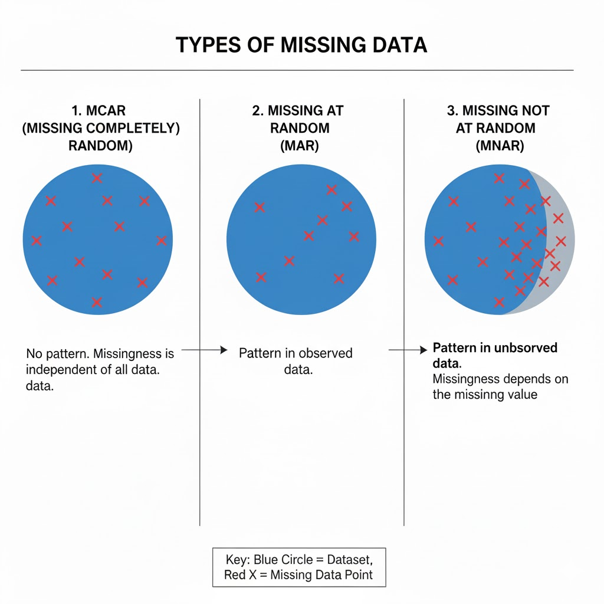

.png)
An ML model is only as good as the data it comes from. Imagine training an image recognition model on blurry images, or a forecasting model on data with 50% of the values missing. The model will perform poorly because they were trained on bad data
Missing data is common but often underestimated. While some ML algorithms can train data with missing values, this is not encouraged. It’s best to find the cause of the missing data and, if possible, impute the missing values.
Training an ML model on missing data can reduce your model accuracy, giving you the impression of selecting the wrong model, or you need more hyperparameter tuning to achieve better results, whereas the problem was with the data itself.
In this article, you will learn some of the hidden costs of missing data in ML models, ways to approach such kinds of data.
What Is Missing Data?
Missing data are observations in our data that are missing either due to systematic issues, such as data collection errors, equipment malfunction, or survey design flaws, or due to random factors like non-response, recording mistakes, or accidental data loss.
Missing datasets are of different types:
- Missing Completely at Random (MCAR): Missing observations are unrelated to the data. For example, a researcher accidentally loses some survey responses because of a computer glitch. In this case, the missing responses have nothing to do with the participants or their answers.
- Missing at Random (MAR): Missing observations are related to the observed data, but not to the missing data itself. For example, in a health survey, younger people are less likely to report their income. Here, missing income depends on age, which is already recorded, but not on the income value itself.
- Missing Not at Random (MNAR): In this case, missing observations are related to the data itself, even after accounting for the observed data. For example, People with higher incomes are less likely to report their income; the missing data depends on unobserved values.

Mitigation Strategies
There are various ways to avoid the costs that come with missing data when training an ML model. Here are some:
- Prevention: Avoiding errors during data collection ensures that your data is as clean as possible. If the data is coming through pipelines, ensure that the pipeline components are working properly to avoid components breaking and resulting in missing values in the final dataset. Ensure you also have validation checks to ensure that the right data is always passed; for example, numeric fields should not accept characters, and so on.
- Imputation: In the presence of missing data, it’s always encouraged to use advanced imputation techniques where applicable instead of mean, median, or mode imputation. These techniques take into account the relationship of variables in the dataset, ensuring that at least the closest possible values are imputed.
- Monitoring: After deploying your machine learning model, ensure you always have post-deployment checks to check your model’s performance. Model drifts can happen, which can occur as a result of bad or missing data from new updates.
Conclusion
Missing data at times can be easily ignored, but the costs they carry are heavy. It causes a lot of harm than good, especially for the model and the users of the model.
Bad imputation practices, discarding them when there are many, are reasons that can make you have a bad model fit.
You must treat missing data imputation as the first step in your ML lifecycle, and spend enough time imputing it.
Before imputation, you should find out the relationship between the missing values and the data to know how best to handle them. This ensures you don’t impute a missing value when it’s actually supposed to be missing.
Even though algorithms can now handle data with missing values, too much of disappeared values might prevent the model not to learn some information, which can bias predictions when predicting on the test set.
In summary, treat data completeness as a first-class citizen in your ML lifecycle.
Need Help with Data? Let’s Make It Simple.
At LearnData.xyz, we’re here to help you solve tough data challenges and make sense of your numbers. Whether you need custom data science solutions or hands-on training to upskill your team, we’ve got your back.
📧 Shoot us an email at admin@learndata.xyz—let’s chat about how we can help you make smarter decisions with your data.